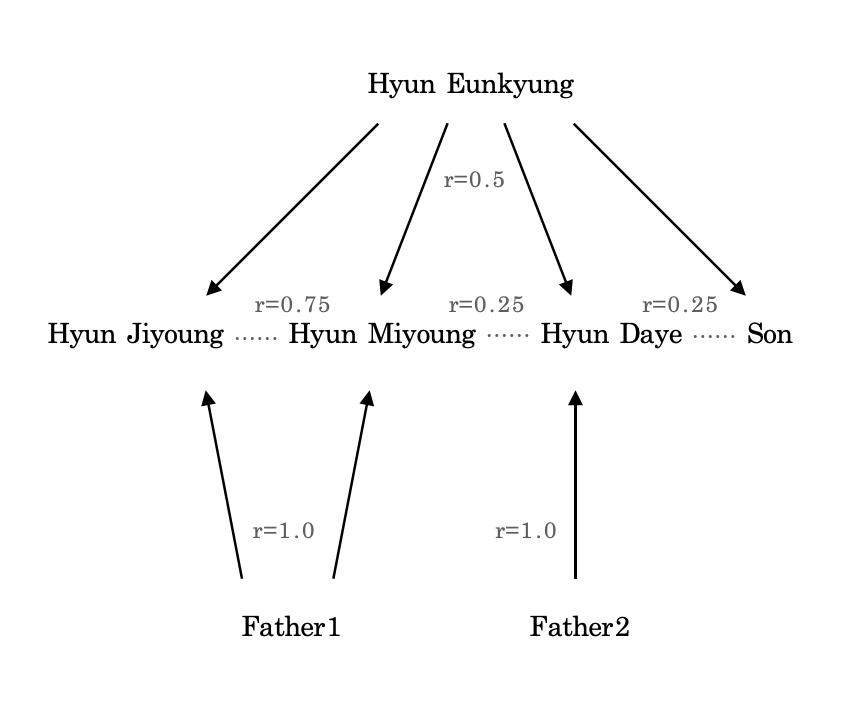

Jiyoung intends not to have kids and instead look after their siblings
and niblings18
1. Hyun Eunkyung gave birth to Hyun Jiyoung, Hyun Miyoung,
Hyun Daye, and a son.
2. Hyun Eunkyung is a mother to Hyun Jiyoung, Hyun Miyoung,
Hyun Daye, and a son.
3. [Text of footnote 3]
4. [Text of footnote 4]
5. [Text of footnote 5]
6. [Text of footnote 6]
7. [Text of footnote 7]
8. [Text of footnote 8]
9. [Text of footnote 9]
10. [Text of footnote 10]
11. [Text of footnote 11]
12. [Text of footnote 12]
13. [Text of footnote 13]
14. [Text of footnote 14]
15. [Text of footnote 15]
16. [Text of footnote 16]
17. [Text of footnote 17]
18. [Text of footnote 18]